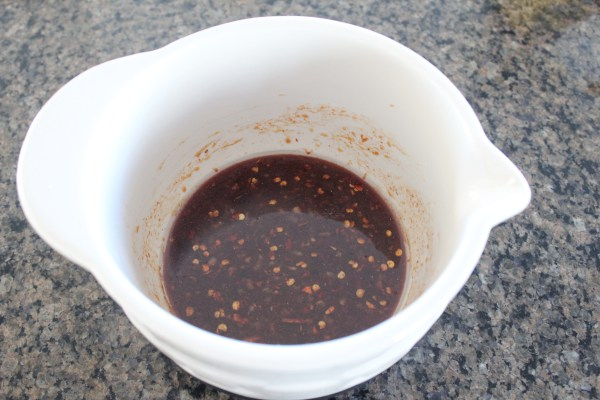
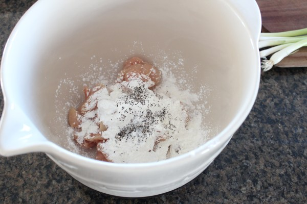
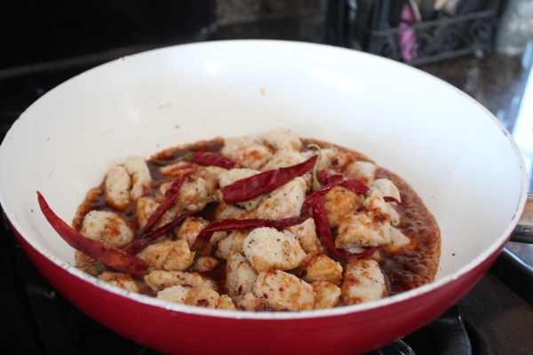
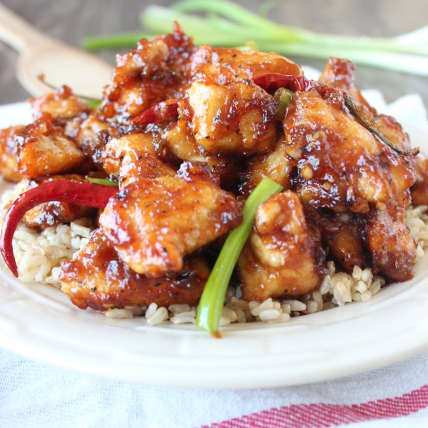

Instructions
In a medium bowl, whisk 1 tbsp canola oil with the soy sauce, rice vinegar, sriracha, honey, garlic, ginger, chinese five spice and red pepper flakes. Set aside.

Toss the chicken breasts in the cornstarch, salt and pepper.
Add the remaining 2 tbsp canola oil to a large skillet over medium-high heat.

When the oil is hot, add the chicken and cook 4-5 minutes.
Add the chilies, then pour the sauce over the chicken and cook 2-3 minutes.

Add the scallions, cook an additional minute, remove from the stove and serve over rice.
